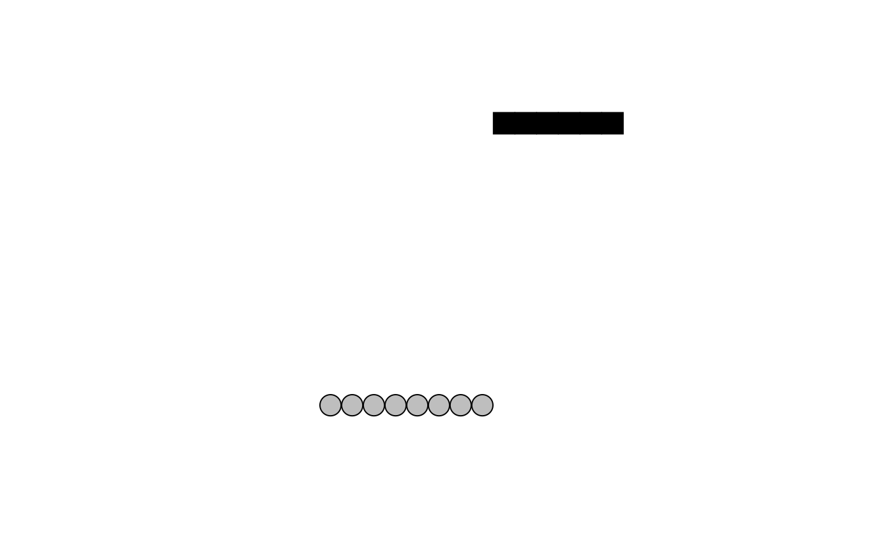
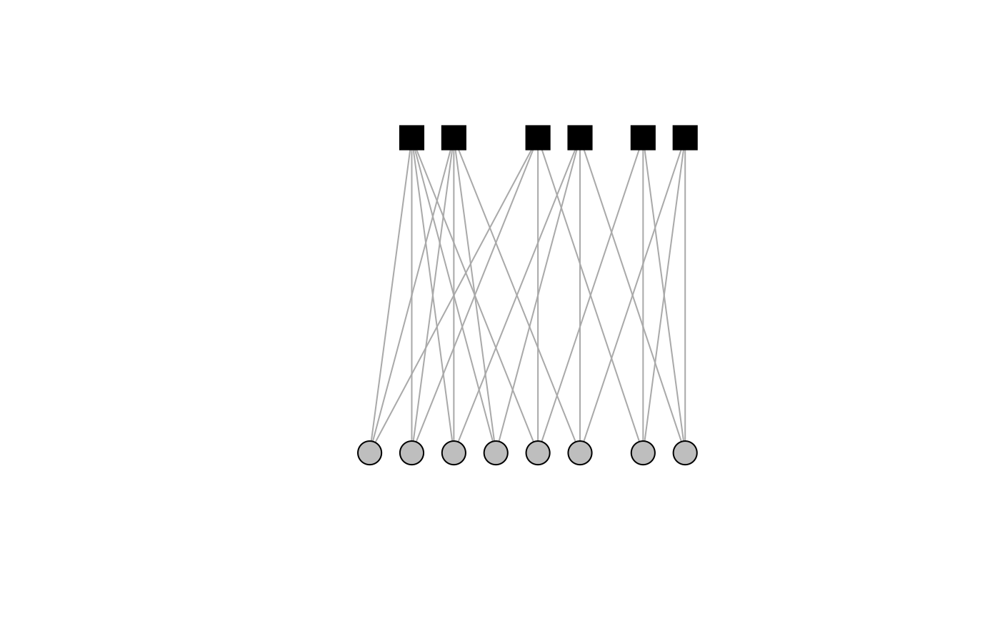
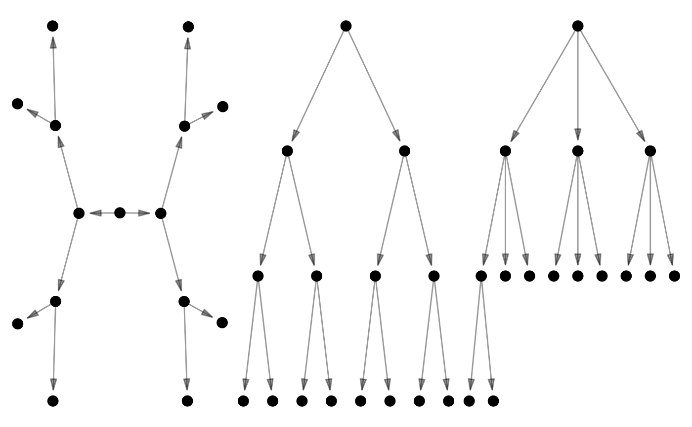
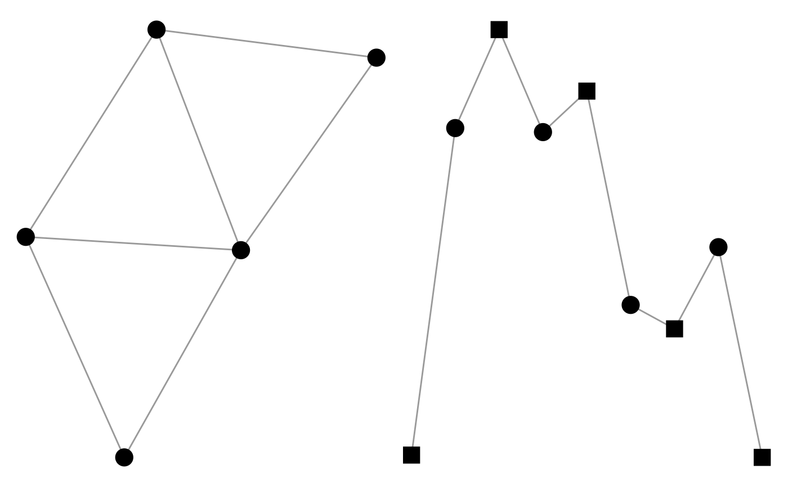
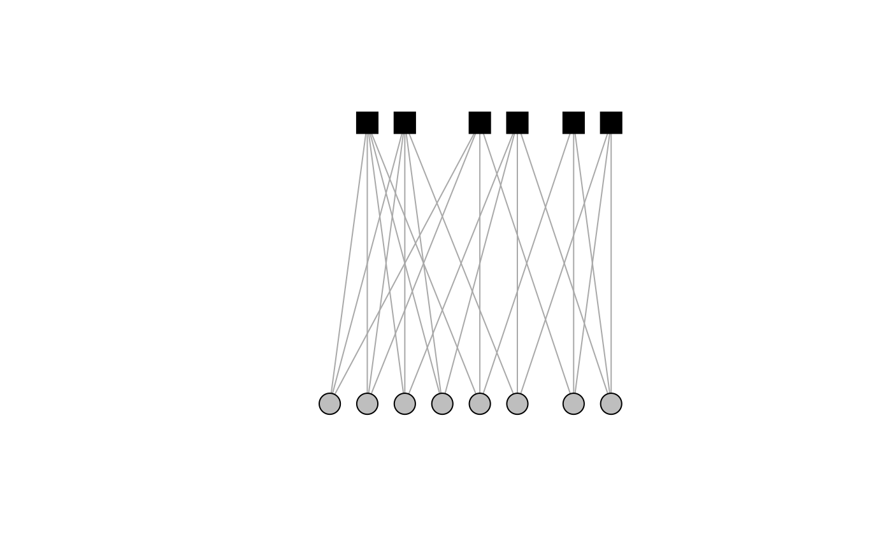
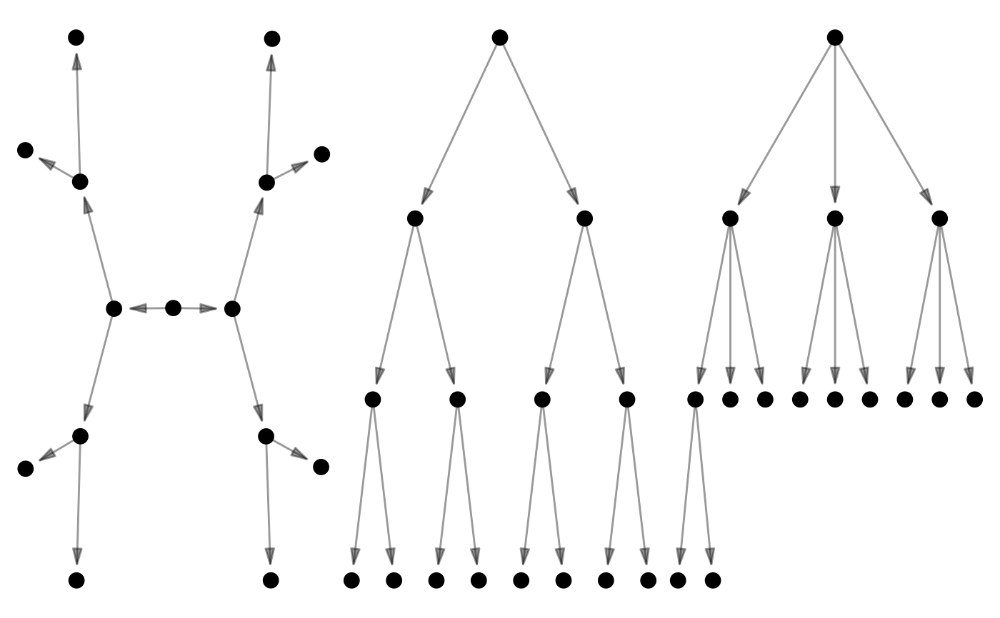
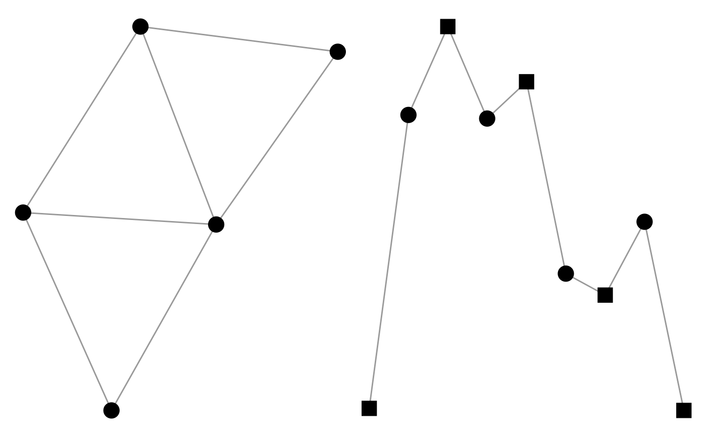

These functions create networks with particular structural properties.
They can create either one-mode and two-mode networks,
depending on whether the common n argument
is passed a single integer (the number of nodes in the one-mode network)
or a vector of two integers to return a two-mode network.
create_empty(n)
create_complete(n)
create_ring(n, width = 1, directed = FALSE, ...)
create_components(n, components = 2)
create_star(n, direction = c("undirected", "in", "out"))
create_tree(n, direction = c("undirected", "in", "out"), branches = 2)
create_lattice(n, direction = c("undirected", "in", "out"))Arguments
- n
Given:
A single integer, e.g.
n = 10, a one-mode network will be created.A vector of two integers, e.g.
n = c(5,10), a two-mode network will be created.A migraph-compatible object, a network of the same dimensions will be created.
- width
The width or breadth of the ring. This is typically double the degree.
- directed
Whether the graph should be directed. By default FALSE.
- ...
Additional arguments passed on to igraph.
- components
Number of components to divide the nodes into.
- direction
One of the following options: "in", "out", or "undirected" (DEFAULT).
- branches
How many branches at each level.
Value
By default an igraph object will be returned,
but this can be coerced into other types of objects
using as_matrix(), as_tidygraph(), or as_network().
Functions
create_empty: Creates an empty graph of the given dimensions.create_complete: Creates a filled graph of the given dimensions, with every possible tie realised.create_ring: Creates a ring or chord graph of the given dimensions that loops around is of a certain width or thickness.create_components: Creates a graph in which the nodes are clustered into separate components.create_star: Creates a graph of the given dimensions that has a maximally central nodecreate_tree: Creates a graph of the given dimensions with successive branches.create_lattice: Creates a graph of the given dimensions with ties to all neighbouring nodes
See also
as_matrix as_tidygraph as_network
Other creation:
generate
Examples
autographr(create_empty(c(8,6))) +
autographr(create_complete(c(8,6)))

autographr(create_ring(8, width = 2)) +
autographr(create_ring(c(8,6), width = 2))
 autographr(create_components(c(10, 12), components = 3))

autographr(create_star(12, "in")) +
autographr(create_star(12, "out")) +
autographr(create_star(c(12,1), "in"))
autographr(create_tree(15, direction = "out")) +
autographr(create_tree(15, direction = "out"), "tree") +
autographr(create_tree(15, direction = "out", branches = 3), "tree")

autographr(create_lattice(5), layout = "kk") +
autographr(create_lattice(c(5,5))) +
autographr(create_lattice(c(5,5,5)))

autographr(create_components(c(10, 12), components = 3))

autographr(create_star(12, "in")) +
autographr(create_star(12, "out")) +
autographr(create_star(c(12,1), "in"))
autographr(create_tree(15, direction = "out")) +
autographr(create_tree(15, direction = "out"), "tree") +
autographr(create_tree(15, direction = "out", branches = 3), "tree")

autographr(create_lattice(5), layout = "kk") +
autographr(create_lattice(c(5,5))) +
autographr(create_lattice(c(5,5,5)))
